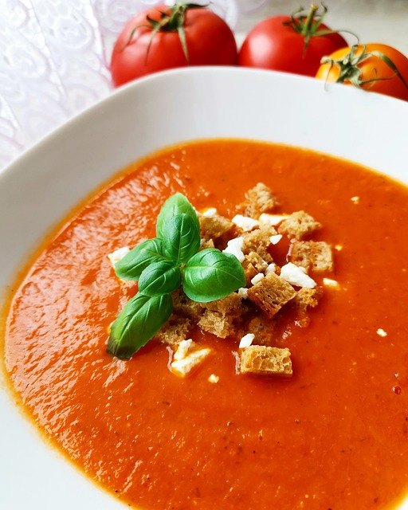

Vegetables Cream
Return to Index

Descriptions
Healthy vegetable cream to enjoy the diversity of flavors
- 2 tablespoons of olive oil
- 1 large onion, chopped
- 2 cloves of garlic, minced
- 3 carrots, peeled and chopped
- 2 celery stalks, chopped
- 2 potatoes, peeled and chopped
- 1 zucchini, chopped
- 1 broccoli head, chopped
- 1 liter (4 cups) of vegetable broth
- 1 cup of heavy cream
- Salt and pepper to taste
- Fresh herbs (like parsley or thyme) for garnish
Step-by-Step Instructions
- Prepare the Dough: In a large bowl, mix the pre-cooked cornmeal and salt together. Gradually add the warm water, stirring constantly until a smooth dough forms. If you like, you can add 1 tablespoon of vegetable oil or butter to the dough for extra flavor.
- Rest the Dough: Let the dough rest for about 5-10 minutes. This allows the cornmeal to absorb the water and become more pliable.
- Shape the Arepas: Divide the dough into equal portions (about the size of a golf ball). Roll each portion into a ball, then flatten it gently with your hands to form a patty about 1/2 inch thick.
- Preheat the Pan: Heat a non-stick skillet or griddle over medium heat. Add a small amount of oil or butter to the skillet to prevent sticking.
- Cook the Arepas: Place the arepas on the hot skillet. Cook for about 5-7 minutes on each side, or until a golden crust forms and the inside is cooked through. You can check for doneness by tapping the arepa; it should sound hollow.
- Optional Baking: If you prefer your arepas to be a bit crisper, you can finish cooking them in a preheated oven at 350°F (175°C) for an additional 10-15 minutes.
- Serve: Arepas can be served hot or warm. They can be sliced open and stuffed with a variety of fillings such as cheese, ham, avocado, chicken, or beans.